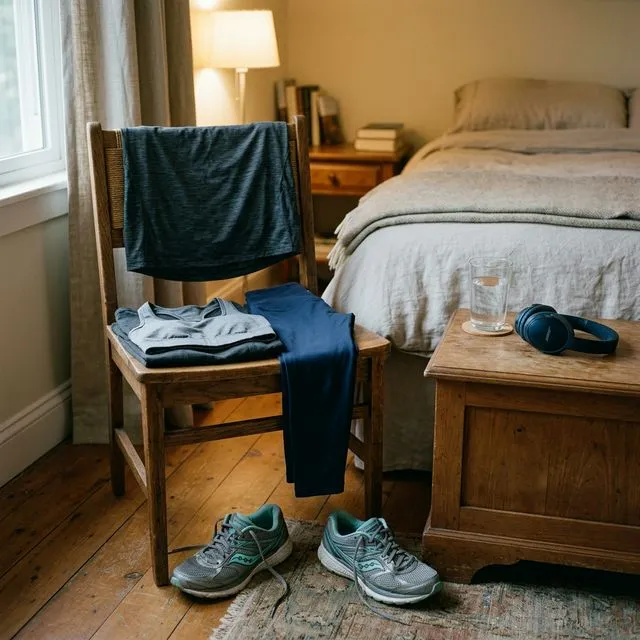
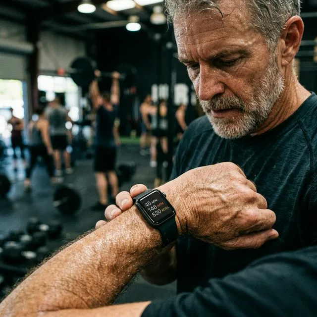
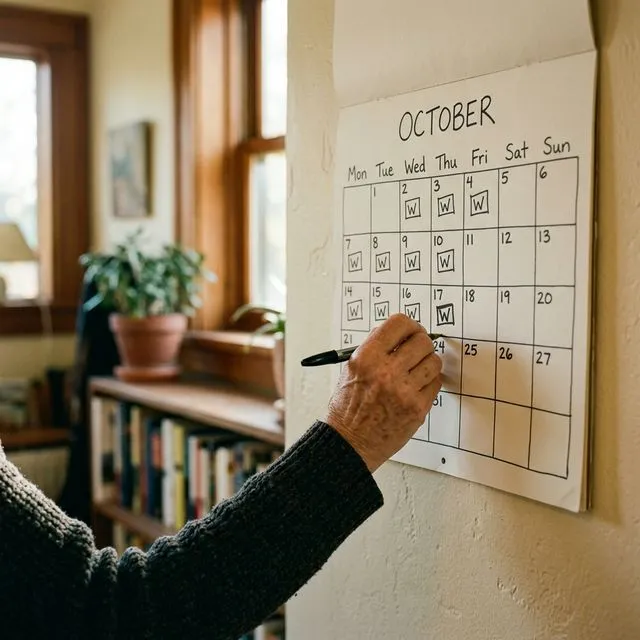
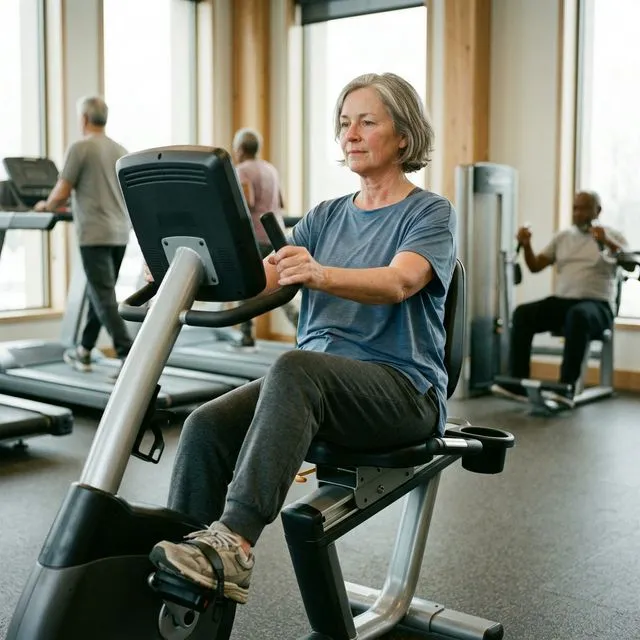

Motywacja to nie charakter. To nie siła woli. To nie kwestia tego, czy jesteś wystarczająco zdeterminowany. To biologia, chemia i kilka bardzo konkretnych nawyków, które można świadomie zaprojektować. I to dotyczy zwłaszcza Ciebie po pięćdziesiątce.
Kluczowe wnioski
- Najważniejsze: Motywacja to nie charakter.
- W artykule znajdziesz konkrety o: Twój mózg nie chce, żebyś ćwiczył. I to jest normalne..
- Drugi kluczowy temat: Motywacja jest przeceniana. Nawyk jest wszystkim..
Jeśli dopiero wracasz do ruchu, zacznij też od tekstu jak zacząć na siłowni po 50-tce. Dużo łatwiej budować nawyk, kiedy nie zgadujesz wszystkiego od zera.
Twój mózg nie chce, żebyś ćwiczył. I to jest normalne.
Zanim cokolwiek innego, jeden fakt, który dużo zmienia. Kiedy zaczynasz ćwiczyć i pojawia się ten głos w głowie: dość, odpocznij, to za trudne, po co to w ogóle robisz, to nie jest słabość charakteru. To ewolucja.
Ludzki mózg jest zaprojektowany do oszczędzania energii. Przez setki tysięcy lat przeżycie zależało od tego, żeby nie tracić kalorii bez powodu. Ruch bez bezpośredniego celu, takiego jak zdobywanie jedzenia czy ucieczka, był z perspektywy biologii marnotrawstwem. Twój mózg nadal tak to interpretuje.
Źródło: Andre et al., Sports Medicine - Open, 2024
Mózg produkuje dyskomfort po to, żebyś przestał. Poczucie zmęczenia, nuda, nagła myśl, że masz coś pilnego do zrobienia, to często strategie neurologiczne, a nie realne ograniczenia fizyczne. Serce, płuca i mięśnie nierzadko są jeszcze w stanie pracować. To głowa mówi: stop.
Motywacja jest przeceniana. Nawyk jest wszystkim.
Większość ludzi czeka na motywację. Wstaje rano, sprawdza, jak się czuje, i jeśli motywacja nie jest wystarczająca, odpuszcza. To podstawowy błąd w rozumieniu tego, jak działa zmiana zachowania.
Motywacja jest chwilowa. Nawyk jest stały. Osoby, które ćwiczą regularnie od lat, nie są bardziej zmotywowane od Ciebie. One po prostu nie negocjują codziennie z własną głową, czy trening jest dziś dobrym pomysłem. Dla nich to jest część dnia, jak mycie zębów.
Źródło: Lally et al., European Journal of Social Psychology, 2010
Ile trwa zbudowanie nawyku ćwiczenia? Badania pokazują przedział od 18 do 254 dni, ze średnią około 66 dni. Nie 21 dni, jak lubią mówić internetowi kaznodzieje. Ale też nie wieczność.
Kluczowy wniosek jest prosty: przez pierwsze 6-8 tygodni będziesz musiał się zmuszać. Potem organizm zacznie coraz częściej upominać się sam. I właśnie o to chodzi.
Jeśli chcesz uniknąć klasycznych błędów na starcie, przeczytaj też 5 największych błędów początkujących po 50-tce. Nawyk buduje się dużo łatwiej, kiedy nie rozwalasz go przeciążeniem, zniechęceniem albo bólem stawów.
Źródło: analiza wstępna opublikowana w arXiv, Habit Formation Insights From a Comprehensive Fitness Study, 2025
Co naprawdę działa — 10 sposobów, które mają dowody
1. Tożsamość zamiast celu
Zamiast mówić sobie: chcę ćwiczyć, powiedz: jestem osobą, która ćwiczy. To nie jest zabawa słowami. To psychologia.
Źródło: Journal of Personality and Social Psychology, 2024
2. Ciuchy wieczorem — i dlaczego to działa
Przygotuj strój treningowy wieczorem przed dniem treningu. Położony na wierzchu, gotowy, widoczny. To nie jest drobiazg. To jest projektowanie środowiska.

Twój mózg widzi strój i zaczyna traktować trening jak coś konkretnego, a nie mglisty pomysł. W praktyce decyzja jest podjęta, zanim jeszcze wstaniesz z łóżka.
3. Zegarek, który motywuje — ale zasłoń zegar na ścianie
Smartwatch albo zegarek z monitorem aktywności to jedno z najmocniejszych narzędzi motywacyjnych dostępnych bez recepty. Daje natychmiastową informację zwrotną, pokazuje ciągłość i buduje streak.

Seria dni bez przerwy. Płomyk w aplikacji. Liczba, która rośnie. To działa zaskakująco mocno, bo mózg nie lubi przerywać rzeczy, które już trwają.
Źródło: badania nad streak maintenance, Coach Pedro Pinto, 2025
Ale jest jeden ważny trik. Podczas samego ćwiczenia nie patrz na zegar na ścianie. Gdy wiesz, że zostało jeszcze 25 minut, mózg zaczyna liczyć sekundy i robić dramat. Gdy nie wiesz, łatwiej wejść w rytm.
4. Krótkie ćwiczenie z nagrodą
Mózg uczy się przez nagrodę. Jeśli po ćwiczeniu wydarza się coś przyjemnego, zaczyna kojarzyć trening z przyjemnością, a nie tylko z wysiłkiem.
Nagroda nie musi być wielka. Ulubiona kawa po treningu. Odcinek podcastu tylko na rowerku. Gorący prysznic. Cokolwiek, co sprawia, że koniec treningu oznacza coś dobrego.
5. Muzyka — to nie tło, to narzędzie
Muzyka podczas ćwiczenia to nie kaprys. To jedno z najlepiej udokumentowanych narzędzi poprawy wydajności i zmniejszania odczucia zmęczenia.
Źródło: Costas Karageorghis, Brunel University London
6. Nawyk na nawyk — habit stacking
Najłatwiej zbudować nowy nawyk, przyklejając go do czegoś, co już istnieje.
- Zawsze pijesz rano kawę? Przed kawą 10 minut ruchu.
- Zawsze bierzesz prysznic o tej samej porze? Trening kończy się tuż przed nim.
- Zawsze oglądasz serial wieczorem? Pierwsze 20 minut oglądaj na rowerku.
- Zawsze dzwonisz do kogoś po południu? Zrób to podczas spaceru.
Źródło: British Psychological Society, 2025
7. Partner lub zobowiązanie społeczne
Jeśli umówisz się z kimś na siłownię, szansa, że pójdziesz, rośnie bardzo mocno. Nie dlatego, że jesteś bardziej ambitny. Dlatego, że mózg nie lubi zawodzić innych.
To samo działa przy zajęciach grupowych. Pojawia się rytm, obecność innych i poczucie, że nie jesteś w tym sam.
Jeśli ten wątek do Ciebie trafia, przeczytaj też siłownia po 50-tce nie jest dla mięśni. Jest dla ludzi. Dla wielu osób to właśnie ludzie utrzymują regularność dłużej niż sama motywacja.
8. Wyrzuty sumienia — skąd się biorą i co z nimi robić
Dobra wiadomość jest taka, że wyrzuty sumienia po opuszczonym treningu bywają dowodem, że nawyk zaczyna działać. Kiedy mózg spodziewa się ćwiczenia jako części dnia i go nie dostaje, pojawia się dyskomfort.
To nie zawsze znak, że jesteś słaby. Często to znak, że mózg uznał ruch za normę.
9. Cele malutkie na start
Jeśli do tej pory nie ćwiczyłeś regularnie, Twoim celem na pierwszy miesiąc nie jest schudnąć 5 kilo ani przebiec 10 kilometrów. Celem jest pojawić się.
Być na siłowni trzy razy w tygodniu. Zrobić 15 minut. Wyjść na spacer, nawet jeśli nie masz ochoty. Samo pojawienie się to sukces.
Źródło: BJ Fogg, Tiny Habits, 2020
10. Śledź postępy — ale prosto
Nie potrzebujesz arkusza kalkulacyjnego z piętnastoma metrykami. Potrzebujesz prostego systemu, który widać.

Kalendarz na ścianie. Długopis. Każdy dzień ćwiczeń to kółko. Każdy pominięty to puste pole. Widok rosnącego łańcucha działa na mózg bardzo mocno. Aktywuje układ nagrody i buduje niechęć do przerywania.
A jeśli największy problem nie leży w samej motywacji, tylko w tym, że trudno Ci w ogóle wejść w środowisko treningowe, przeczytaj też dlaczego siłownia po 50-tce jest dla ludzi, a nie tylko dla mięśni. Dla wielu osób to właśnie miejsce i ludzie uruchamiają regularność skuteczniej niż kolejna obietnica składana samemu sobie.
I na koniec — po co to wszystko?

Warto powiedzieć to wprost. Nie ćwiczysz po to, żeby żyć wiecznie. Ćwiczysz po to, żeby żyć lepiej. Za rok, za pięć lat, za dwadzieścia.
Nowoczesna medycyna wydłużyła życie. Ale jakość tych dodatkowych lat, czyli to, jak się ruszasz, jak myślisz, jak śpisz i jak bardzo jesteś niezależny, w dużej mierze zależy od tego, co robisz dziś.
Po pięćdziesiątce ciało nie jest wrogie. Jest po prostu inne. Reaguje wolniej. Ale reaguje. Każda sesja treningowa zmienia coś w biochemii, w mięśniach, w kościach i w mózgu.
Pięćdziesiątka to nie moment, w którym drzwi się zamykają. To moment, w którym dorosły człowiek, już trochę mądrzejszy niż kiedyś, może zaprojektować sobie najlepsze lata. Z cierpliwością. Z myśleniem. Z szacunkiem do ciała.
Zacznij. Nie czekaj na motywację. Zaprojektuj nawyk. Przygotuj ciuchy wieczorem. Wybierz playlistę. Wybierz nagrodę. Ustaw prosty plan. I pamiętaj: Twój mózg przez pierwsze tygodnie będzie protestował. To normalne. Nie panikuj.
Słuchaj siebie. Tego długookresowego siebie, który za dziesięć lat będzie Ci dziękował za każdą decyzję podjętą dzisiaj.
Źródła
- [1] Andre, N. et al. (2024). A Behavioral Perspective for Improving Exercise Adherence. Sports Medicine - Open, 10:56.
- [2] Lally, P. et al. (2010). How are habits formed: Modelling habit formation in the real world. European Journal of Social Psychology, 40(6), 998-1009.
- [3] Singh, B. et al. (2024). Time to Form a Habit: A Systematic Review and Meta-Analysis. Healthcare (Basel), 12(23), 2488.
- [4] Liefooghe, B. et al. (2024). Leveraging cognitive neuroscience for making and breaking real-world habits. Trends in Cognitive Sciences.
- [5] Vuckovic, V., Duric, S. (2024). Motivational variations in fitness: a population study. Frontiers in Psychology, 15:1377947.
- [6] Habit Formation Insights From a Comprehensive Fitness Study (2025). arXiv: 2501.01779.
- [7] Fogg, B.J. (2020). Tiny Habits: The Small Changes That Change Everything. Houghton Mifflin Harcourt.
- [8] Attia, P., Gifford, B. (2023). Outlive: The Science and Art of Longevity. Harmony Books.
- [9] Karageorghis, C.I. et al. (2012). Psychological, psychophysical, and ergogenic effects of music in swimming. Psychology of Sport and Exercise, 13(5), 560-568.
FAQ
Jak znaleźć motywację do ćwiczeń po 50, kiedy jest jej zero?
Najlepiej oprzeć się na nawyku i prostym planie tygodnia, a nie na emocjach dnia. Działanie w małych krokach zwykle uruchamia motywację wtórnie.
Co działa lepiej po 50: cel wagowy czy cel sprawnościowy?
Najczęściej trwalsze są cele sprawnościowe, bo szybciej dają odczuwalną poprawę na co dzień. Waga może się zmieniać wolniej i bardziej frustrować.
Jak utrzymać regularność treningu po dłuższej przerwie?
Pomaga stały harmonogram, realistyczna objętość i śledzenie postępu tygodniowego. Lepiej zrobić mniej, ale stale, niż zaczynać od zbyt ambitnego planu.